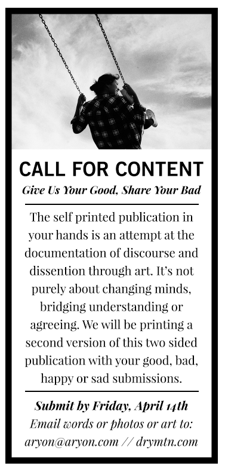

Call for Content

Original Call For Content from the first two page printing
Quick Request
Send us anything short (maximum of 4 paragraphs or 400 words or 1 color art or photos). This includes stories, ideas, writings, social media posts, photos, illustrations or art of any kind that expresses either or both your Good News and your Bad News. We will layout the Good News on one side and the Bad News on the other and will print them in a 8 page publication we will distribute to the public.
Deadline
This Friday, April 14th by 11:59pm.
send to aryon at aryon.com
Intentionally short deadline to urge quick current thoughts.
Call for Submissions for DRY MTN TWO. https://t.co/rpn58WewTd #505SOS
— Aryon Hopkins (@AryonHopkins) April 12, 2017
Tweet with #505SOS
Simplest way to share your Good and/or Bad News is to add #505SOS to any tweet.
Share far and wide.
Or keep it like a secret.
Support us at Spread
We have the chance to win big money in Santa Fe at Spread. Support us by attending.
Don't stress. Make a mess.